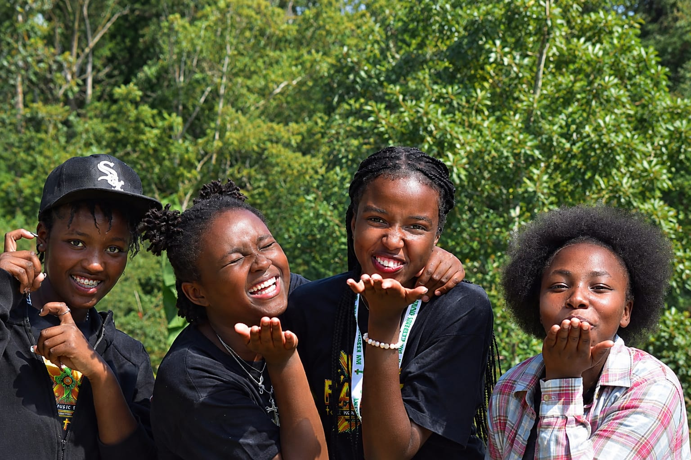
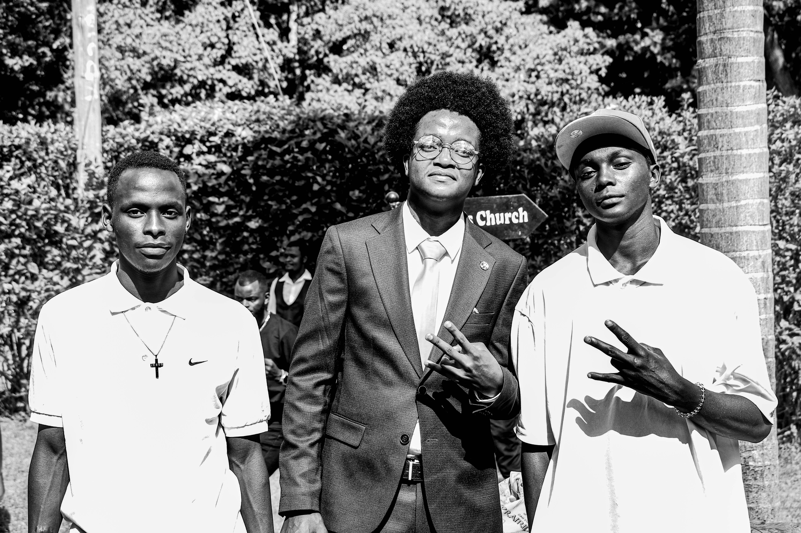
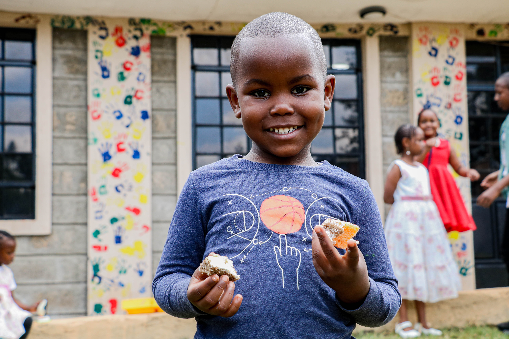
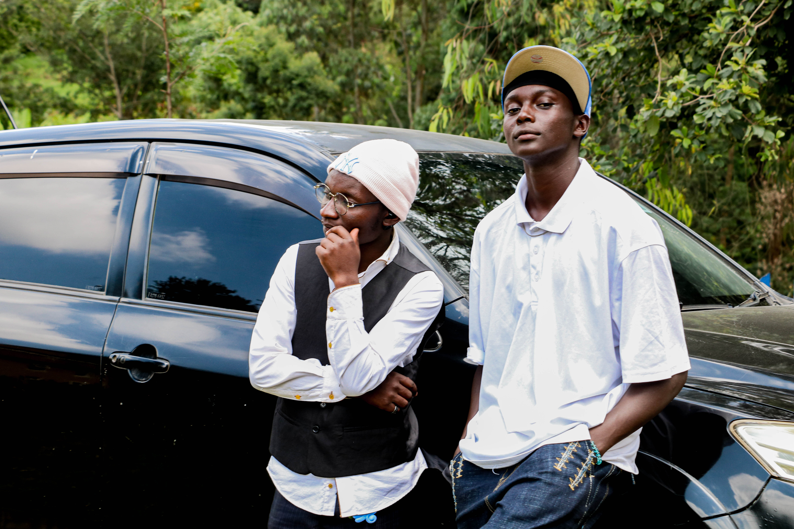

We unveiled this season's teen theme with confetti and celebration — Faith, Action, Integrity, Talk and Heart.
“Let no one despise you for your youth, but set the believers an example in speech, in conduct, in love, in faith, in purity.” 1 Timothy 4:12 (ESV)

Growing in confidence
A joyful CTY memory

Every voice heard

Cake after service
“No generation should walk their faith journey alone.”
CTY stands for Children, Teens, and Youth: a ministry built to give every generation, from the youngest child to the young adult stepping into leadership, a place to belong. Through fellowship, shared testimonies, and honest conversation, we exist to build one community that faces life's challenges together and motivates each generation to carry the faith forward.
The values that shape how we gather, lead, and serve across every age group.
One family across Children, Teens, and Youth — no one ministry stands apart from the others.
Real stories that build real faith. We believe in the power of a life changed, spoken out loud.
Each generation lifting the next — mentorship is not a program here, it is the culture.

“One community, facing every season together, and shining a little brighter for it.”
You do not have to figure out your faith journey alone. Find a gathering, meet the family and take your next step.